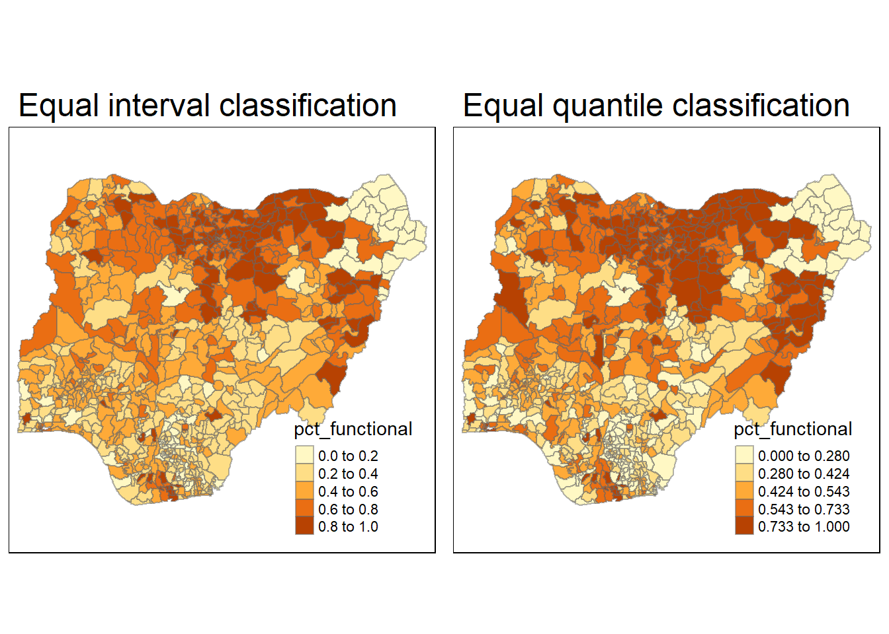
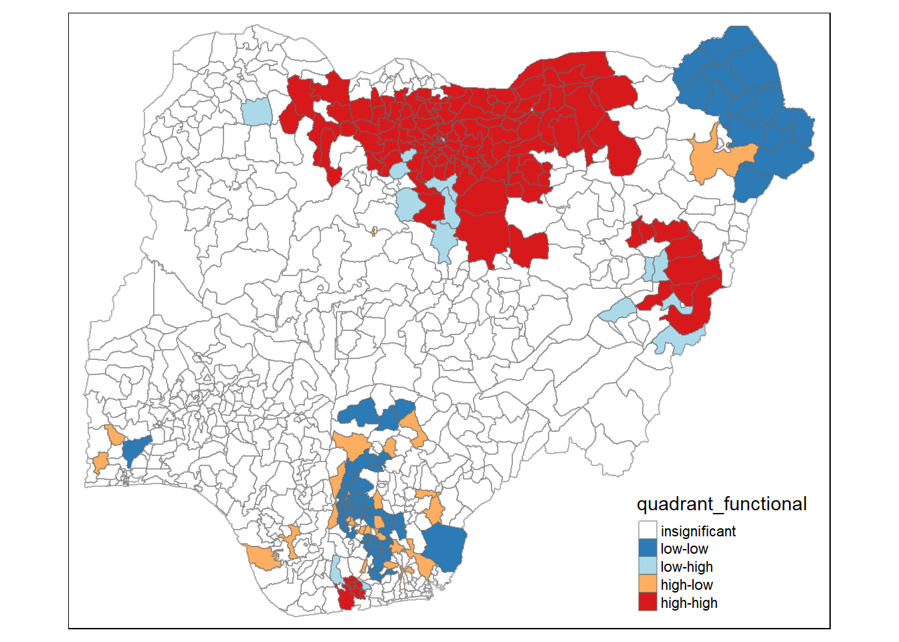
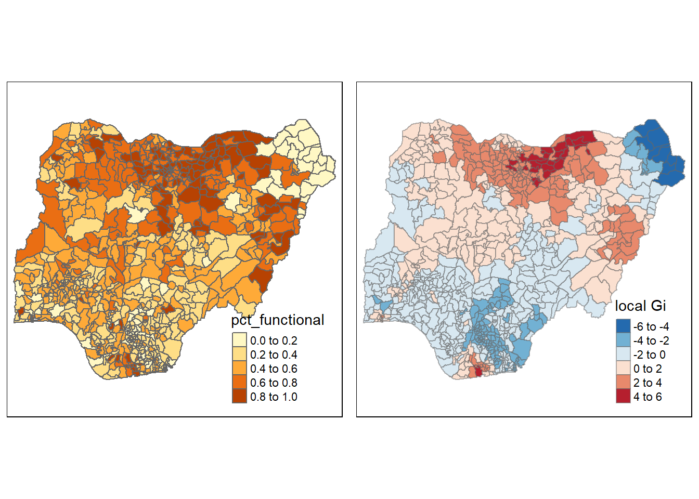

pacman::p_load(sf, tidyverse, tmap, spdep, funModeling)1.0 Overview
1.1 Background/Problem statement
Water is an important resource to mankind. Clean and accessible water is critical to human health. It provides a healthy environment, a sustainable economy, reduces poverty and ensures peace and security. Yet over 40% of the global population does not have access to sufficient clean water.
Developing countries are most affected by water shortages and poor water quality. Up to 80% of illnesses in the developing world are linked to inadequate water and sanitation. Despite technological advancement, providing clean water to the rural community is still a major development issues in many countries globally, especially countries in the Africa continent.
To address the issue of providing clean and sustainable water supply to the rural community, a global Water Point Data Exchange (WPdx) project has been initiated. The main aim of this initiative is to collect water point related data from rural areas at the water point or small water scheme level and share the data via WPdx Data Repository, a cloud-based data library. What is so special of this project is that data are collected based on WPDx Data Standard.
2. Objectives
Geospatial analytics hold tremendous potential to address complex problems facing society. In this study, I will apply appropriate global and local measures of spatial Association techniques to reveals the spatial patterns of Not Functional water points. For the purpose of this study, Nigeria will be used as the study country.
3 Getting Started
3.1 Packages used
In the code chunk below, p_load() of pacman package is used to install and load the following R packages into R environment:
sf, tidyverse, tmap, spdep, and funModeling will be used for rapid Exploratory Data Analysis.
sf is use for importing and handling geospatial data in R tidyverse is mainly use for wrangling attribute data in R
spdep will be used to compute spatial weights, global and local spatial autocorrelation statistics
tmap will be used to prepare cartographic quality chropleth map
funModeling will be used for rapid Exploratory Data Analysis.
4 Data preparation
4.1 Importing Geospatial Data
In this in-class data, aspatial and geospatial data sets will be used, they are:
geo_export_11f67af6-d430-41fc-b181-fa36b07ee920
geoBoundaries-NGA-ADM2
4.1.1 Importing water point geospatial data
First, we are going to import the water point geospatial data (i.e. geo_export) by using the code chunk below.
wp <- st_read(dsn = "data/aspatial/",
layer = "geo_export_11f67af6-d430-41fc-b181-fa36b07ee920")We can retrieve the geometry list-column in this case by using st_geometry() as shown in the code chunk below.
st_geometry(wp)Transform to Projected Coordinate Systems of Nigeria(EPSG: 26391), because we will calculate distance-based spatial weights such as fixed or adaptive weights is used.
wp <- st_as_sf(wp, coords = c("lon_deg", "lat_deg"), crs = 4326)
st_crs(wp)
#wp <- st_transform (wp, crs = 26391)4.1.2 Importing Nigeria LGA boundary data
Now, we are going to import the LGA boundary data into R environment by using the code chunk below.
nga <- st_read(dsn = "data/geospatial",layer = "geoBoundaries-NGA-ADM2")
st_crs(nga)Transform to Projected Coordinate Systems of Nigeria(EPSG: 26391), because we will calculate distance-based spatial weights such as fixed or adaptive weights is used.
st_geometry(nga)Next, write_rds() of readr package is used to save the extracted sf data table (i.e. wp) into an output file in rds data format. The output file is called wp_nga.rds and it is saved in geodata sub-folder.
write_rds(nga, "data/geospatial/wp_nga.rds")4.2 Data Wrangling
4.2.1 Recoding NA values into string
In the code chunk below, replace_na() is used to recode all the NA values in status_cle field into Unknown.
4.2.2 EDA
In the code chunk below, freq() of funModeling package is used to display the distribution of status_cle field in wp_nga.
wp_nga <- wp %>%
mutate(status_cle = replace_na(status_cle, "Unknown"))
freq(data=wp_nga,
input = 'status_cle')4.3 Extracting Water Point Data
4.3.1 Extracting funtional water point
In the code chunk below, filter() of dplyr is used to select functional water points.
wpt_functional <- wp_nga %>%
filter(status_cle %in%
c("Functional",
"Functional but not in use",
"Functional but needs repair"))freq(data=wpt_functional,
input = 'status_cle')4.3.2 Extracting non-funtional water point
wpt_nonfunctional <- wp_nga %>%
filter(status_cle %in%
c("Abandoned/Decommissioned",
"Abandoned",
"Non-Functional",
"Non functional due to dry season",
"Non-Functional due to dry season"))4.3.3 Extracting water point with Unknown class
wpt_unknown <- wp_nga %>%
filter(status_cle == "Unknown")4.4 Performing Point-in-Polygon Count
nga_wp <- nga %>%
mutate(`total wpt` = lengths(
st_intersects(nga, wp_nga))) %>%
mutate(`wpt functional` = lengths(
st_intersects(nga, wpt_functional))) %>%
mutate(`wpt non-functional` = lengths(
st_intersects(nga, wpt_nonfunctional))) %>%
mutate(`wpt unknown` = lengths(
st_intersects(nga, wpt_unknown)))4.5 Saving the Analytical Data Table
nga_wp <- nga_wp %>%
mutate(pct_functional = `wpt functional`/`total wpt`) %>%
mutate(`pct_non-functional` = `wpt non-functional`/`total wpt`) %>%
select(1,6:12)Things to learn from the code chunk above:
mutate() of dplyr package is used to derive two fields namely pct_functional and pct_non-functional. to keep the file size small, select() of dplyr is used to retain only field 1, 6 to 12.
The following code chunks is to covert NaN to “0”.
nga_wp$pct_functional[is.nan(nga_wp$pct_functiona)]<-0
nga_wp$`pct_non-functional`[is.nan(nga_wp$`pct_non-functional`)]<-0Now, we have the tidy sf data table subsequent analysis. We will save the sf data table into rds format.
write_rds(nga_wp, "data/geospatial/nga_wp.rds")We will have two datasets, one is used to analyze functional water points, the other is used to analyze functional water points.
nga_wp <- read_rds("data/geospatial/nga_wp.rds") %>%
st_transform(crs = 26391)
nga_wp_nonfunctional <- read_rds("data/geospatial/nga_wp.rds") %>%
st_transform(crs = 26391)5 Thematic Mapping for functional water point rate
5.1 Visualising Regional Development Indicator
Now, we are going to prepare a basemap and a choropleth map showing the distribution of functional water point rate by using qtm() of tmap package.
equal: divides the range of the variable into n parts. quantile: equal number of cases in each group.
The following is functional water point rate.
equal <- tm_shape(nga_wp) +
tm_fill("pct_functional",
n = 5,
style = "equal") +
tm_borders(alpha = 0.5) +
tm_layout(main.title = "Equal interval classification")
quantile <- tm_shape(nga_wp) +
tm_fill("pct_functional",
n = 5,
style = "quantile") +
tm_borders(alpha = 0.5) +
tm_layout(main.title = "Equal quantile classification")
tmap_arrange(equal,
quantile,
asp=1,
ncol=2)
The following is non-functional point rate.
equal <- tm_shape(nga_wp_nonfunctional) +
tm_fill("pct_non-functional",
n = 5,
style = "equal") +
tm_borders(alpha = 0.5) +
tm_layout(main.title = "Equal interval classification")
quantile <- tm_shape(nga_wp_nonfunctional) +
tm_fill("pct_non-functional",
n = 5,
style = "quantile") +
tm_borders(alpha = 0.5) +
tm_layout(main.title = "Equal quantile classification")
tmap_arrange(equal,
quantile,
asp=1,
ncol=2)Insights: quantile is a better classification method because we can see water point rate spreads out rather clustering into one segment. Hence, we will use quantile style in the following analysis.
6 Visualize the spatial distribution
6.1 Visualizing the spatial distribution of water points
nga_wp <- read_rds("data/geospatial/nga_wp.rds")
total <- qtm(nga_wp, "total wpt")+tm_layout(main.title = "Distribution of total water points",
main.title.position = "center",
main.title.size = 0.6,
legend.height = 0.5,
legend.width = 0.3,
legend.text.size = 0.5,
legend.title.size = 0.5,
main.title.fontface = "bold",
frame = TRUE)
wp_functional <- qtm(nga_wp, "wpt functional")+tm_layout(main.title = "Distribution of functional water points",
main.title.position = "center",
main.title.size = 0.6,
legend.height = 0.5,
legend.width = 0.3,
legend.text.size = 0.5,
legend.title.size = 0.5,
main.title.fontface = "bold",
frame = TRUE)
wp_nonfunctional <- qtm(nga_wp, "wpt non-functional")+tm_layout(main.title = "Distribution of non-functional water points",
main.title.position = "center",
main.title.size = 0.6,
legend.height = 0.5,
legend.width = 0.3,
legend.text.size = 0.5,
legend.title.size = 0.5,
main.title.fontface = "bold",
frame = TRUE)
unknown <- qtm(nga_wp, "wpt unknown")+tm_layout(main.title = "Distribution of unknown water points",
main.title.position = "center",
main.title.size = 0.6,
legend.height = 0.5,
legend.width = 0.3,
legend.text.size = 0.5,
legend.title.size = 0.5,
main.title.fontface = "bold",
frame = TRUE)
tmap_arrange(total, wp_functional, wp_nonfunctional, unknown, ncol=2)
6.2 Visualizing the spatial distribution of functional and non-functional water points rate
nga_wp <- read_rds("data/geospatial/nga_wp.rds")
pct_functional <- qtm(nga_wp, "pct_functional")
pct_nonfunctional <- qtm(nga_wp, "pct_non-functional")
tmap_arrange(pct_functional, pct_nonfunctional, asp=1, ncol=2)The areas which has higher functional water point rate is in northern part whereas the higher non-functional water point rate is mainly in southern part and a bit scattered.
7 Global Spatial Autocorrelation
7.1 Computing Contiguity Spatial Weights
The spatial weights is used to define the neighbourhood relationships between the geographical units (i.e. LGA) in the study area.
In the code chunk below, poly2nb() of spdep package is used to compute contiguity weight matrices for the study area. This function builds a neighbours list based on LGA regions with contiguous boundaries.
The code chunk below is used to compute Queen contiguity weight matrix.
wm_q <- poly2nb(nga_wp,
queen=TRUE)
summary(wm_q)Neighbour list object:
Number of regions: 774
Number of nonzero links: 4440
Percentage nonzero weights: 0.7411414
Average number of links: 5.736434
1 region with no links:
86
Link number distribution:
0 1 2 3 4 5 6 7 8 9 10 11 12 14
1 2 14 57 125 182 140 122 72 41 12 4 1 1
2 least connected regions:
138 560 with 1 link
1 most connected region:
508 with 14 linksThe summary report above shows that there are 774 LGAs in Nigeria. The most connected area unit has 14 neighbours. There is one LGA with zero neighbour.
set.ZeroPolicyOption(TRUE)[1] FALSE7.2 Row-standardised weights matrix
Next, we need to assign weights to each neighboring polygon. In our case, each neighboring polygon will be assigned equal weight (style=“W”). This is accomplished by assigning the fraction 1/(#ofneighbors) to each neighboring LGA then summing the weighted income values.
rswm_q <- nb2listw(wm_q,
style="W",
zero.policy = TRUE)
rswm_qCharacteristics of weights list object:
Neighbour list object:
Number of regions: 774
Number of nonzero links: 4440
Percentage nonzero weights: 0.7411414
Average number of links: 5.736434
1 region with no links:
86
Weights style: W
Weights constants summary:
n nn S0 S1 S2
W 773 597529 773 285.0658 3198.4147.3 Global Spatial Autocorrelation: Moran’s I
In this section, we will learn how to perform Moran’s I statistics testing by using moran.test() of spdep.
7.4 Maron’s I test
7.4.1 Maron’s I test for funtional water points rate
H0 (Null Hypothesis) - The distribution of functional water point is is a random phenomenon.
H1 (Alternative Hypothesis) - The distribution of functional water point rate is spatially dependent through calculating the Moran’s I statistic.
moran.test(nga_wp$`pct_functional`,
listw=rswm_q,
zero.policy = TRUE,
na.action=na.omit)
Moran I test under randomisation
data: nga_wp$pct_functional
weights: rswm_q n reduced by no-neighbour observations
Moran I statistic standard deviate = 24.986, p-value < 2.2e-16
alternative hypothesis: greater
sample estimates:
Moran I statistic Expectation Variance
0.5426214187 -0.0012953368 0.0004738722 Moran I statistic is positive (0.54), p-value is 2.2e-16, which is less than 0.05, which indicates that we can reject the Null Hypothesis. The spatial distribution of high values in the dataset is more spatially clustered than would be expected if underlying spatial processes were truly random.
7.5 Computing local Moran’s I
The code chunks below are used to compute local Moran’s I of functional water points at the region level.
fips <- order(nga_wp$shapeName)
localMI_functional <- localmoran(nga_wp$`pct_functional`, rswm_q)
head(localMI_functional) Ii E.Ii Var.Ii Z.Ii Pr(z != E(Ii))
1 0.41018362 -1.654345e-04 0.03188191 2.2981654 0.0215523774
2 0.44339949 -2.255204e-04 0.05802043 1.8417283 0.0655148997
3 4.23819606 -5.482789e-03 1.40315932 3.5825233 0.0003402913
4 -0.06581869 -1.984964e-04 0.02177313 -0.4447101 0.6565292424
5 0.08100201 -2.019191e-05 0.00310945 1.4529889 0.1462268280
6 0.49501574 -4.914108e-04 0.05388720 2.1345538 0.0327974744localmoran() function returns a matrix of values whose columns are:
Ii: the local Moran’s I statistics E.Ii: the expectation of local moran statistic under the randomisation hypothesis Var.Ii: the variance of local moran statistic under the randomisation hypothesis Z.Ii:the standard deviate of local moran statistic Pr(): the p-value of local moran statistic
7.5.1 Mapping the local Moran’s I
Before mapping the local Moran’s I map, it is wise to append the local Moran’s I dataframe (i.e. localMI) onto nga_wp SpatialPolygonDataFrame. The code chunks below can be used to perform the task. The out SpatialPolygonDataFrame is called nga.localMI.
nga.localMI_functional <- cbind(nga_wp,localMI_functional) %>%
rename(Pr.Ii = Pr.z....E.Ii..)7.5.2 Mapping local Moran’s I values
Using choropleth mapping functions of tmap package, we can plot the local Moran’s I values by using the code chinks below.
tm_shape(nga.localMI_functional) +
tm_fill(col = "Ii",
style = "pretty",
palette = "RdBu",
title = "funcational local moran statistics") +
tm_borders(alpha = 0.5)Variable(s) "Ii" contains positive and negative values, so midpoint is set to 0. Set midpoint = NA to show the full spectrum of the color palette.Moran’s I positive (I >0): Clusters of functional water point rate are at northeast. The dark blue is highly clustered.
7.5.3 Mapping local Moran’s I p-values
The code chunks below produce a choropleth map of Moran’s I p-values by using functions of tmap package. The following code chunks are for functional water points rate.
tm_shape(nga.localMI_functional) +
tm_fill(col = "Pr.Ii",
breaks=c(-Inf, 0.001, 0.01, 0.05, 0.1, Inf),
palette="-Blues",
title = "functional local Moran's I p-values") +
tm_borders(alpha = 0.5)Insights: p-value <0.05 is statistically significant.The lower p-value, the higher significance.
7.5.4 Mapping both local Moran’s I values and p-values
The code chunk below will be used to create such visualization. The following code chunks are for functional water points rate.
localMI.map_functional <- tm_shape(nga.localMI_functional) +
tm_fill(col = "Ii",
style = "pretty",
title = "functional local moran statistics") +
tm_borders(alpha = 0.5)
pvalue.map_functional <- tm_shape(nga.localMI_functional) +
tm_fill(col = "Pr.Ii",
breaks=c(-Inf, 0.001, 0.01, 0.05, 0.1, Inf),
palette="-Blues",
title = "functional local Moran's I p-values") +
tm_borders(alpha = 0.5)
tmap_arrange(localMI.map_functional, pvalue.map_functional, ncol=2)Variable(s) "Ii" contains positive and negative values, so midpoint is set to 0. Set midpoint = NA to show the full spectrum of the color palette.
Local Moran’s I values is positive (I >0), and p-values is less than 0.05: Clustered, The spatial distribution of high values of functional water point rate in the dataset of of high values and/or low values are more spatially clustered, there are about 4 clusters.
8 Creating a LISA Cluster Map for functional water point rate
8.1 Plotting Moran scatterplot
The code chunk below plots the Moran scatterplot of functional water points by using moran.plot() of spdep.
nci <- moran.plot(nga_wp$`pct_functional`, rswm_q,
labels=as.character(nga_wp$shapeName),
xlab="Functional waterpoints rate",
ylab="Spatially Lag functional waterpoints rate")Notice that the plot is split in 4 quadrants. The top right corner belongs to areas that have high functional water points rate and are surrounded by other areas that have the average level of functional water points rate. The left bottom corner belongs to areas that have low functional water points rate and are surrounded by other areas that have the average level of functional water points rate.
8.2 Plotting Moran scatterplot with standardised variable
First we will use scale() to centers and scales the variable.
nga_wp$Z.func <- scale(nga_wp$`pct_functional`) %>%
as.vector Now, we are ready to plot the Moran scatterplot again by using the code chunk below.
nci2 <- moran.plot(nga_wp$Z.func, rswm_q,
labels=as.character(nga_wp$shapeName),
xlab="z functional points rate",
ylab="Spatially Lag functional points rate")Notice that the plot is split in 4 quadrants. The top right corner belongs to areas that have high functional water points rate and are surrounded by other areas that have the average level of functional water points rate. The left bottom corner belongs to areas that have low functional water points rate and are surrounded by other areas that have the average level of functional water points rate.
8.3 Preparing LISA map classes:
The code chunks below show the steps to prepare a LISA cluster map.
quadrant_functional <- vector(mode="numeric",length=nrow(localMI_functional))Next, derives the spatially lagged variable of interest and centers the spatially lagged variable around its mean.
nga_wp$lag_func_points <- lag.listw(rswm_q, nga_wp$`pct_functional`)
DV_functional <- nga_wp$lag_func_points - mean(nga_wp$lag_func_points) This is follow by centering the local Moran’s around the mean.
LM_I_functional <- localMI_functional[,1] - mean(localMI_functional[,1]) Next, we will set a statistical significance level for the local Moran.
signif <- 0.05 These four command lines define the low-low (1), low-high (2), high-low (3) and high-high (4) categories.
quadrant_functional[DV_functional <0 & LM_I_functional>0] <- 1
quadrant_functional[DV_functional >0 & LM_I_functional<0] <- 2
quadrant_functional[DV_functional <0 & LM_I_functional<0] <- 3
quadrant_functional[DV_functional >0 & LM_I_functional>0] <- 4 Lastly, places non-significant Moran in the category 0.
quadrant_functional[localMI_functional[,5]>signif] <- 08.4 Plotting LISA MAP:
An outlier: significant and negative if location i is associated with relatively low values in surrounding locations. A cluster: significant and positive if location is associated with relatively high values of the surrounding locations.
nga.localMI_functional$quadrant_functional <- quadrant_functional
colors <- c("#ffffff", "#2c7bb6", "#abd9e9", "#fdae61", "#d7191c")
clusters <- c("insignificant", "low-low", "low-high", "high-low", "high-high")
tm_shape(nga.localMI_functional) +
tm_fill(col = "quadrant_functional",
style = "cat",
palette = colors[c(sort(unique(quadrant_functional)))+1],
labels = clusters[c(sort(unique(quadrant_functional)))+1],
popup.vars = c("")) +
tm_view(set.zoom.limits = c(11,17)) +
tm_borders(alpha=0.5)
Dark blue areas are clusters of (Low-low) water point rate. Red areas are clusters of (High-high) water point rate. Orange and light blue are outliers.
tmap_arrange(localMI.map_functional, pvalue.map_functional, ncol=2)Variable(s) "Ii" contains positive and negative values, so midpoint is set to 0. Set midpoint = NA to show the full spectrum of the color palette.Local Moran’s I values is positive (I >0), and p-values is less than 0.05: Clustered, The spatial distribution of high values of functional water point rate in the dataset is more spatially clustered, there are about 4 clusters. This matches the analysis of LISA MAP cluster analysis.
func <- qtm(nga_wp, "pct_functional")
nga.localMI_functional$quadrant_functional <- quadrant_functional
colors <- c("#ffffff", "#2c7bb6", "#abd9e9", "#fdae61", "#d7191c")
clusters <- c("insignificant", "low-low", "low-high", "high-low", "high-high")
LISAmap_functional <- tm_shape(nga.localMI_functional) +
tm_fill(col = "quadrant_functional",
style = "cat",
palette = colors[c(sort(unique(quadrant_functional)))+1],
labels = clusters[c(sort(unique(quadrant_functional)))+1],
popup.vars = c("")) +
tm_view(set.zoom.limits = c(11,17)) +
tm_borders(alpha=0.5)
tmap_arrange(func, LISAmap_functional,
asp=1, ncol=2)The pct_functional map shows: red is highest functional water point rate. the yellow is the lightest water point rate. The quadrant_functional shows:dark blue area are clusters of (Low-low) water point rate.red area are clusters of (High-high) water point rate. Orange and light blue are outliers. The insights drawn from two maps match each other.
9 Hot Spot and Cold Spot Area Analysis
9.1 Getis and Ord’s G-Statistics
The analysis consists of three steps:
Deriving spatial weight matrix
Computing Gi statistics
Mapping Gi statistics
9.2 Deriving distance-based weight matrix
There are two type of distance-based proximity matrix, they are:
fixed distance weight matrix; and adaptive distance weight matrix.
Deriving the centroid To get our longitude values we map the st_centroid() function over the geometry column of us.bound and access the longitude value through double bracket notation [[]] and 1. This allows us to get only the longitude, which is the first value in each centroid. We do the same for latitude with one key difference. We access the second value per each centroid with [[2]]. Now that we have latitude and longitude, we use cbind to put longitude and latitude into the same object.
longitude <- map_dbl(nga_wp$geometry, ~st_centroid(.x)[[1]])
latitude <- map_dbl(nga_wp$geometry, ~st_centroid(.x)[[2]])
coords <- cbind(longitude, latitude)9.2.1 Determine the cut-off distance
#coords <- coordinates(Nigeria)
k1 <- knn2nb(knearneigh(coords))
k1dists <- unlist(nbdists(k1, coords, longlat = FALSE))
summary(k1dists) Min. 1st Qu. Median Mean 3rd Qu. Max.
2669 12834 20304 22084 27783 72139 The summary report shows that the largest first nearest neighbour distance is 72.139 km, so using this as the upper threshold gives certainty that all units will have at least one neighbour.
9.2.2 Computing fixed distance weight matrix
Now, we will compute the distance weight matrix by using dnearneigh() as shown in the code chunk below.
wm_d73000 <- dnearneigh(coords, 0, 73000, longlat = FALSE)
wm_d73000Neighbour list object:
Number of regions: 774
Number of nonzero links: 18486
Percentage nonzero weights: 3.085752
Average number of links: 23.88372 Next, nb2listw() is used to convert the nb object into spatial weights object.
wm73000_lw <- nb2listw(wm_d73000, style = 'B')
summary(wm73000_lw)Characteristics of weights list object:
Neighbour list object:
Number of regions: 774
Number of nonzero links: 18486
Percentage nonzero weights: 3.085752
Average number of links: 23.88372
Link number distribution:
1 2 3 4 5 6 7 8 9 10 11 12 13 14 15 16 17 18 19 20 21 22 23 24 25 26
4 9 11 17 35 35 29 28 34 38 28 20 17 27 12 17 7 13 13 13 24 5 12 12 5 15
27 28 29 30 31 32 33 34 35 36 37 38 39 40 41 42 43 44 45 46 47 48 49 50 51 52
12 8 10 12 17 7 5 13 8 8 10 13 17 14 6 9 3 3 3 8 8 11 7 6 2 6
53 54 55 56 57 58 59 60 61 62 63 64 65 66 67 68 72
2 1 4 4 8 3 3 6 2 7 4 8 7 4 1 3 1
4 least connected regions:
90 112 237 670 with 1 link
1 most connected region:
585 with 72 links
Weights style: B
Weights constants summary:
n nn S0 S1 S2
B 774 599076 18486 36972 2719848The output spatial weights object is called wm73000_lw.
9.3 Computing adaptive distance weight matrix
knn <- knn2nb(knearneigh(coords, k=8))
knnNeighbour list object:
Number of regions: 774
Number of nonzero links: 6192
Percentage nonzero weights: 1.033592
Average number of links: 8
Non-symmetric neighbours listNext, nb2listw() is used to convert the nb object into spatial weights object.
knn_lw <- nb2listw(knn, style = 'B')
summary(knn_lw)Characteristics of weights list object:
Neighbour list object:
Number of regions: 774
Number of nonzero links: 6192
Percentage nonzero weights: 1.033592
Average number of links: 8
Non-symmetric neighbours list
Link number distribution:
8
774
774 least connected regions:
1 2 3 4 5 6 7 8 9 10 11 12 13 14 15 16 17 18 19 20 21 22 23 24 25 26 27 28 29 30 31 32 33 34 35 36 37 38 39 40 41 42 43 44 45 46 47 48 49 50 51 52 53 54 55 56 57 58 59 60 61 62 63 64 65 66 67 68 69 70 71 72 73 74 75 76 77 78 79 80 81 82 83 84 85 86 87 88 89 90 91 92 93 94 95 96 97 98 99 100 101 102 103 104 105 106 107 108 109 110 111 112 113 114 115 116 117 118 119 120 121 122 123 124 125 126 127 128 129 130 131 132 133 134 135 136 137 138 139 140 141 142 143 144 145 146 147 148 149 150 151 152 153 154 155 156 157 158 159 160 161 162 163 164 165 166 167 168 169 170 171 172 173 174 175 176 177 178 179 180 181 182 183 184 185 186 187 188 189 190 191 192 193 194 195 196 197 198 199 200 201 202 203 204 205 206 207 208 209 210 211 212 213 214 215 216 217 218 219 220 221 222 223 224 225 226 227 228 229 230 231 232 233 234 235 236 237 238 239 240 241 242 243 244 245 246 247 248 249 250 251 252 253 254 255 256 257 258 259 260 261 262 263 264 265 266 267 268 269 270 271 272 273 274 275 276 277 278 279 280 281 282 283 284 285 286 287 288 289 290 291 292 293 294 295 296 297 298 299 300 301 302 303 304 305 306 307 308 309 310 311 312 313 314 315 316 317 318 319 320 321 322 323 324 325 326 327 328 329 330 331 332 333 334 335 336 337 338 339 340 341 342 343 344 345 346 347 348 349 350 351 352 353 354 355 356 357 358 359 360 361 362 363 364 365 366 367 368 369 370 371 372 373 374 375 376 377 378 379 380 381 382 383 384 385 386 387 388 389 390 391 392 393 394 395 396 397 398 399 400 401 402 403 404 405 406 407 408 409 410 411 412 413 414 415 416 417 418 419 420 421 422 423 424 425 426 427 428 429 430 431 432 433 434 435 436 437 438 439 440 441 442 443 444 445 446 447 448 449 450 451 452 453 454 455 456 457 458 459 460 461 462 463 464 465 466 467 468 469 470 471 472 473 474 475 476 477 478 479 480 481 482 483 484 485 486 487 488 489 490 491 492 493 494 495 496 497 498 499 500 501 502 503 504 505 506 507 508 509 510 511 512 513 514 515 516 517 518 519 520 521 522 523 524 525 526 527 528 529 530 531 532 533 534 535 536 537 538 539 540 541 542 543 544 545 546 547 548 549 550 551 552 553 554 555 556 557 558 559 560 561 562 563 564 565 566 567 568 569 570 571 572 573 574 575 576 577 578 579 580 581 582 583 584 585 586 587 588 589 590 591 592 593 594 595 596 597 598 599 600 601 602 603 604 605 606 607 608 609 610 611 612 613 614 615 616 617 618 619 620 621 622 623 624 625 626 627 628 629 630 631 632 633 634 635 636 637 638 639 640 641 642 643 644 645 646 647 648 649 650 651 652 653 654 655 656 657 658 659 660 661 662 663 664 665 666 667 668 669 670 671 672 673 674 675 676 677 678 679 680 681 682 683 684 685 686 687 688 689 690 691 692 693 694 695 696 697 698 699 700 701 702 703 704 705 706 707 708 709 710 711 712 713 714 715 716 717 718 719 720 721 722 723 724 725 726 727 728 729 730 731 732 733 734 735 736 737 738 739 740 741 742 743 744 745 746 747 748 749 750 751 752 753 754 755 756 757 758 759 760 761 762 763 764 765 766 767 768 769 770 771 772 773 774 with 8 links
774 most connected regions:
1 2 3 4 5 6 7 8 9 10 11 12 13 14 15 16 17 18 19 20 21 22 23 24 25 26 27 28 29 30 31 32 33 34 35 36 37 38 39 40 41 42 43 44 45 46 47 48 49 50 51 52 53 54 55 56 57 58 59 60 61 62 63 64 65 66 67 68 69 70 71 72 73 74 75 76 77 78 79 80 81 82 83 84 85 86 87 88 89 90 91 92 93 94 95 96 97 98 99 100 101 102 103 104 105 106 107 108 109 110 111 112 113 114 115 116 117 118 119 120 121 122 123 124 125 126 127 128 129 130 131 132 133 134 135 136 137 138 139 140 141 142 143 144 145 146 147 148 149 150 151 152 153 154 155 156 157 158 159 160 161 162 163 164 165 166 167 168 169 170 171 172 173 174 175 176 177 178 179 180 181 182 183 184 185 186 187 188 189 190 191 192 193 194 195 196 197 198 199 200 201 202 203 204 205 206 207 208 209 210 211 212 213 214 215 216 217 218 219 220 221 222 223 224 225 226 227 228 229 230 231 232 233 234 235 236 237 238 239 240 241 242 243 244 245 246 247 248 249 250 251 252 253 254 255 256 257 258 259 260 261 262 263 264 265 266 267 268 269 270 271 272 273 274 275 276 277 278 279 280 281 282 283 284 285 286 287 288 289 290 291 292 293 294 295 296 297 298 299 300 301 302 303 304 305 306 307 308 309 310 311 312 313 314 315 316 317 318 319 320 321 322 323 324 325 326 327 328 329 330 331 332 333 334 335 336 337 338 339 340 341 342 343 344 345 346 347 348 349 350 351 352 353 354 355 356 357 358 359 360 361 362 363 364 365 366 367 368 369 370 371 372 373 374 375 376 377 378 379 380 381 382 383 384 385 386 387 388 389 390 391 392 393 394 395 396 397 398 399 400 401 402 403 404 405 406 407 408 409 410 411 412 413 414 415 416 417 418 419 420 421 422 423 424 425 426 427 428 429 430 431 432 433 434 435 436 437 438 439 440 441 442 443 444 445 446 447 448 449 450 451 452 453 454 455 456 457 458 459 460 461 462 463 464 465 466 467 468 469 470 471 472 473 474 475 476 477 478 479 480 481 482 483 484 485 486 487 488 489 490 491 492 493 494 495 496 497 498 499 500 501 502 503 504 505 506 507 508 509 510 511 512 513 514 515 516 517 518 519 520 521 522 523 524 525 526 527 528 529 530 531 532 533 534 535 536 537 538 539 540 541 542 543 544 545 546 547 548 549 550 551 552 553 554 555 556 557 558 559 560 561 562 563 564 565 566 567 568 569 570 571 572 573 574 575 576 577 578 579 580 581 582 583 584 585 586 587 588 589 590 591 592 593 594 595 596 597 598 599 600 601 602 603 604 605 606 607 608 609 610 611 612 613 614 615 616 617 618 619 620 621 622 623 624 625 626 627 628 629 630 631 632 633 634 635 636 637 638 639 640 641 642 643 644 645 646 647 648 649 650 651 652 653 654 655 656 657 658 659 660 661 662 663 664 665 666 667 668 669 670 671 672 673 674 675 676 677 678 679 680 681 682 683 684 685 686 687 688 689 690 691 692 693 694 695 696 697 698 699 700 701 702 703 704 705 706 707 708 709 710 711 712 713 714 715 716 717 718 719 720 721 722 723 724 725 726 727 728 729 730 731 732 733 734 735 736 737 738 739 740 741 742 743 744 745 746 747 748 749 750 751 752 753 754 755 756 757 758 759 760 761 762 763 764 765 766 767 768 769 770 771 772 773 774 with 8 links
Weights style: B
Weights constants summary:
n nn S0 S1 S2
B 774 599076 6192 11154 20194010 Computing GI Statistics for funtional water point rate
10.1 Computing GI statistics with fixed distance
fips <- order(nga_wp$shapeName)
gi.fixed <- localG(nga_wp$`pct_functional`, wm73000_lw)
nga_wp.gi <- cbind(nga_wp, as.matrix(gi.fixed)) %>%
rename(gstat_fixed = as.matrix.gi.fixed.)10.2 Mapping fixed distance with weights
func <- qtm(nga_wp, "pct_functional")
Gimap <-tm_shape(nga_wp.gi) +
tm_fill(col = "gstat_fixed",
style = "pretty",
palette="-RdBu",
title = "local Gi") +
tm_borders(alpha = 0.5)
tmap_arrange(func, Gimap, asp=1, ncol=2)Variable(s) "gstat_fixed" contains positive and negative values, so midpoint is set to 0. Set midpoint = NA to show the full spectrum of the color palette.Functional water point rates are associated with relatively high values of the surrounding locations (clustered- hotspot areas), the Gi value 5-10. Gi low values (-10 to -5) indicated cold spots.
10.3 Gi statistics using adaptive distance
fips <- order(nga_wp$shapeName)
gi.adaptive <- localG(nga_wp$`pct_functional`, knn_lw)
nga_wp.gi <- cbind(nga_wp, as.matrix(gi.adaptive)) %>%
rename(gstat_adaptive = as.matrix.gi.adaptive.)10.4 Mapping Gi values with adaptive distance weight
func <- qtm(nga_wp, "pct_functional")
Gimap_functional <- tm_shape(nga_wp.gi) +
tm_fill(col = "gstat_adaptive",
style = "pretty",
palette="-RdBu",
title = "local Gi") +
tm_borders(alpha = 0.5)
tmap_arrange(func,
Gimap_functional,
asp=1,
ncol=2)Variable(s) "gstat_adaptive" contains positive and negative values, so midpoint is set to 0. Set midpoint = NA to show the full spectrum of the color palette.
Functional water point rates are associated with relatively high values of the surrounding locations (clustered- hotspot areas), the Gi value 2 to 4, 4 to 6. Gi low values (-6 to -4,-4 to -2) indicated cold spots.
11 Global Spatial Autocorrelation
11. 1 Computing Contiguity Spatial Weights
The spatial weights is used to define the neighbourhood relationships between the geographical units (i.e. LGA) in the study area.
In the code chunk below, poly2nb() of spdep package is used to compute contiguity weight matrices for the study area. This function builds a neighbours list based on LGA regions with contiguous boundaries.
The code chunk below is used to compute Queen contiguity weight matrix.
wm_q_non_functional <- poly2nb(nga_wp_nonfunctional,
queen=TRUE)
summary(wm_q_non_functional)Neighbour list object:
Number of regions: 774
Number of nonzero links: 4440
Percentage nonzero weights: 0.7411414
Average number of links: 5.736434
1 region with no links:
86
Link number distribution:
0 1 2 3 4 5 6 7 8 9 10 11 12 14
1 2 14 57 125 182 140 122 72 41 12 4 1 1
2 least connected regions:
138 560 with 1 link
1 most connected region:
508 with 14 linksThe summary report above shows that there are 774 LGAs in Nigeria. The most connected area unit has 14 neighbours. There is one LGA with zero neighbour.
set.ZeroPolicyOption(TRUE)[1] TRUE11.2 Row-standardised weights matrix
Next, we need to assign weights to each neighboring polygon. In our case, each neighboring polygon will be assigned equal weight (style=“W”). This is accomplished by assigning the fraction 1/(#ofneighbors) to each neighboring LGA then summing the weighted income values.
rswm_q_non_functional <- nb2listw(wm_q_non_functional,
style="W",
zero.policy = TRUE)
rswm_q_non_functionalCharacteristics of weights list object:
Neighbour list object:
Number of regions: 774
Number of nonzero links: 4440
Percentage nonzero weights: 0.7411414
Average number of links: 5.736434
1 region with no links:
86
Weights style: W
Weights constants summary:
n nn S0 S1 S2
W 773 597529 773 285.0658 3198.41411.2.1 Maron’s I test for non-funtional water points rate
H0 (Null Hypothesis) - The distribution of non-functional water point is is a random phenomenon.
H1 (Alternative Hypothesis) - The distribution of non-functional water point rate is spatially dependent through calculating the Moran’s I statistic.
moran.test(nga_wp_nonfunctional$`pct_non-functional`,
listw=rswm_q_non_functional,
zero.policy = TRUE,
na.action=na.omit)
Moran I test under randomisation
data: nga_wp_nonfunctional$`pct_non-functional`
weights: rswm_q_non_functional n reduced by no-neighbour observations
Moran I statistic standard deviate = 22.285, p-value < 2.2e-16
alternative hypothesis: greater
sample estimates:
Moran I statistic Expectation Variance
0.4837570240 -0.0012953368 0.0004737621 Moran I statistic is positive (0.48), p-value is 2.2e-16,which is less then 0.001, which indicates that we can reject the Null Hypothesis. The spatial distribution of high values in the dataset is more spatially clustered than would be expected if underlying spatial processes were truly random.
11.3 Computing local Moran’s I
The code chunks below are used to compute local Moran’s I of non-functional water points at the region level.
fips <- order(nga_wp_nonfunctional$shapeName)
localMI_non_functional <- localmoran(nga_wp_nonfunctional$`pct_non-functional`, rswm_q_non_functional)
head(localMI_non_functional) Ii E.Ii Var.Ii Z.Ii Pr(z != E(Ii))
1 0.7205030 -0.0008462949 0.16298365 1.786790 0.073971380
2 0.5252722 -0.0006367969 0.16376361 1.299577 0.193746096
3 2.9136576 -0.0037692854 0.96630021 2.967864 0.002998774
4 0.2526888 -0.0016448047 0.18015811 0.599207 0.549034825
5 1.1677063 -0.0008713700 0.13407224 3.191451 0.001415602
6 0.5116138 -0.0008830323 0.09679375 1.647280 0.099500421localmoran() function returns a matrix of values whose columns are:
Ii: the local Moran’s I statistics E.Ii: the expectation of local moran statistic under the randomisation hypothesis Var.Ii: the variance of local moran statistic under the randomisation hypothesis Z.Ii:the standard deviate of local moran statistic Pr(): the p-value of local moran statistic
11.3.1 Mapping the local Moran’s I
Before mapping the local Moran’s I map, it is wise to append the local Moran’s I dataframe (i.e. localMI) onto nga_wp SpatialPolygonDataFrame. The code chunks below can be used to perform the task. The out SpatialPolygonDataFrame is called nga.localMI.
Now, let’s calculate nga.localMI for non-functional water points rate.
nga.localMI_non_functional <- cbind(nga_wp_nonfunctional,localMI_non_functional) %>%
rename(Pr.Ii = Pr.z....E.Ii..)11.3.2 Mapping local Moran’s I values
Using choropleth mapping functions of tmap package, we can plot the local Moran’s I values by using the code chinks below.
tm_shape(nga.localMI_non_functional) +
tm_fill(col = "Ii",
style = "pretty",
palette = "RdBu",
title = "non-funcational local moran statistics") +
tm_borders(alpha = 0.5)Variable(s) "Ii" contains positive and negative values, so midpoint is set to 0. Set midpoint = NA to show the full spectrum of the color palette.11.3.4 Mapping local Moran’s I p-values
The code chunks below produce a choropleth map of Moran’s I p-values by using functions of tmap package. The following code chunks are for non-functional water points rate.
tm_shape(nga.localMI_non_functional) +
tm_fill(col = "Pr.Ii",
breaks=c(-Inf, 0.001, 0.01, 0.05, 0.1, Inf),
palette="-Blues",
title = "non-functional local Moran's I p-values") +
tm_borders(alpha = 0.5)11.3.5 Mapping both local Moran’s I values and p-values
The code chunk below will be used to create such visualization. The following code chunks are for non-functional water points rate.
localMI.map_non_functional <- tm_shape(nga.localMI_non_functional) +
tm_fill(col = "Ii",
style = "pretty",
title = "non-functional local moran statistics") +
tm_borders(alpha = 0.5)
pvalue.map_non_functional <- tm_shape(nga.localMI_non_functional) +
tm_fill(col = "Pr.Ii",
breaks=c(-Inf, 0.001, 0.01, 0.05, 0.1, Inf),
palette="-Blues",
title = "non-functional local Moran's I p-values") +
tm_borders(alpha = 0.5)
tmap_arrange(localMI.map_non_functional, pvalue.map_non_functional, ncol=2)Variable(s) "Ii" contains positive and negative values, so midpoint is set to 0. Set midpoint = NA to show the full spectrum of the color palette.Local Moran’s I values is positive (I>0), and p-values is less than 0.05: Clustered, The spatial distribution of high values of functional water point rate in the dataset is more spatially clustered.
12 Creating a LISA Cluster Map for non-functional water point rate
12.1 Plotting Moran scatterplot
The code chunk below plots the Moran scatterplot of non-functional water points by using moran.plot() of spdep.
nci <- moran.plot(nga_wp_nonfunctional$`pct_non-functional`, rswm_q,
labels=as.character(nga_wp_nonfunctional$shapeName),
xlab="Non-Functional waterpoints rate",
ylab="Spatially Lag non-functional waterpoints rate")Notice that the plot is split in 4 quadrants. The top right corner belongs to areas that have high non-functional water points rate and are surrounded by other areas that have the average level of functional water points rate. The left bottom corner belongs to areas that have low non-functional water points rate and are surrounded by other areas that have the average level of functional water points rate.
12.2 Plotting Moran scatterplot with standardised variable
First we will use scale() to centers and scales the variable.
nga_wp_nonfunctional$Z.nonfunc <- scale(nga_wp$`pct_non-functional`) %>%
as.vector Now, we are ready to plot the Moran scatterplot again by using the code chunk below.
nci2 <- moran.plot(nga_wp_nonfunctional$Z.nonfunc, rswm_q,
labels=as.character(nga_wp_nonfunctional$shapeName),
xlab="z non-functional points rate",
ylab="Spatially Lag non-functional points rate")12.3 Preparing LISA map classes
The code chunks below show the steps to prepare a LISA cluster map.
quadrant_non_functional <- vector(mode="numeric",length=nrow(localMI_non_functional))Next, derives the spatially lagged variable of interest and centers the spatially lagged variable around its mean.
nga_wp_nonfunctional$lag_non_func_points <- lag.listw(rswm_q, nga_wp_nonfunctional$`pct_non-functional`)
DV_non_functional <- nga_wp_nonfunctional$lag_non_func_points - mean(nga_wp_nonfunctional$lag_non_func_points) This is follow by centering the local Moran’s around the mean.
LM_I_non_functional <- localMI_non_functional[,1] - mean(localMI_non_functional[,1]) Next, we will set a statistical significance level for the local Moran.
signif <- 0.05 These four command lines define the low-low (1), low-high (2), high-low (3) and high-high (4) categories.
quadrant_non_functional[DV_non_functional <0 & LM_I_non_functional>0] <- 1
quadrant_non_functional[DV_non_functional >0 & LM_I_non_functional<0] <- 2
quadrant_non_functional[DV_non_functional <0 & LM_I_non_functional<0] <- 3
quadrant_non_functional[DV_non_functional >0 & LM_I_non_functional>0] <- 4 Lastly, places non-significant Moran in the category 0.
quadrant_non_functional[localMI_non_functional[,5]>signif] <- 012.4 Plotting LISA MAP:
nga.localMI_non_functional$quadrant_non_functional <- quadrant_non_functional
colors <- c("#ffffff", "#2c7bb6", "#abd9e9", "#fdae61", "#d7191c")
clusters <- c("insignificant", "low-low", "low-high", "high-low", "high-high")
tm_shape(nga.localMI_non_functional) +
tm_fill(col = "quadrant_non_functional",
style = "cat",
palette = colors[c(sort(unique(quadrant_non_functional)))+1],
labels = clusters[c(sort(unique(quadrant_non_functional)))+1],
popup.vars = c("")) +
tm_view(set.zoom.limits = c(11,17)) +
tm_borders(alpha=0.5)For effective interpretation, it is better to plot both the local Moran’s I values map and its corresponding p-values map next to each other.
nonfunc <- qtm(nga_wp_nonfunctional, "pct_non-functional")
nga.localMI_non_functional$quadrant_non_functional <- quadrant_non_functional
colors <- c("#ffffff", "#2c7bb6", "#abd9e9", "#fdae61", "#d7191c")
clusters <- c("insignificant", "low-low", "low-high", "high-low", "high-high")
LISAmap_non_functional <- tm_shape(nga.localMI_non_functional) +
tm_fill(col = "quadrant_non_functional",
style = "cat",
palette = colors[c(sort(unique(quadrant_non_functional)))+1],
labels = clusters[c(sort(unique(quadrant_non_functional)))+1],
popup.vars = c("")) +
tm_view(set.zoom.limits = c(11,17)) +
tm_borders(alpha=0.5)
tmap_arrange(nonfunc, LISAmap_non_functional,
asp=1, ncol=2)We can also include the local Moran’s I map and p-value map as shown below for easy comparison.
tmap_arrange(localMI.map_non_functional, pvalue.map_non_functional, ncol=2)Variable(s) "Ii" contains positive and negative values, so midpoint is set to 0. Set midpoint = NA to show the full spectrum of the color palette.
The pct_functional map shows: red is highest non-functional water point rate. the yellow is the lightest water point rate. The quadrant_functional shows:dark blue area are clusters of (Low-low) water point rate.red area are clusters of (High-high) water point rate. Orange and light blue are outliers. The insights drawn from two maps match each other.
Hot Spot and Cold Spot Area Analysis
12.5 Getis and Ord’s G-Statistics
The analysis consists of three steps:
Deriving spatial weight matrix
Computing Gi statistics
Mapping Gi statistics
12.6 Deriving distance-based weight matrix
There are two type of distance-based proximity matrix, they are:
fixed distance weight matrix; and adaptive distance weight matrix.
Deriving the centroid To get our longitude values we map the st_centroid() function over the geometry column of us.bound and access the longitude value through double bracket notation [[]] and 1. This allows us to get only the longitude, which is the first value in each centroid. We do the same for latitude with one key difference. We access the second value per each centroid with [[2]]. Now that we have latitude and longitude, we use cbind to put longitude and latitude into the same object.
longitude <- map_dbl(nga_wp$geometry, ~st_centroid(.x)[[1]])
latitude <- map_dbl(nga_wp$geometry, ~st_centroid(.x)[[2]])
coords <- cbind(longitude, latitude)12.6.1 Determine the cut-off distance
#coords <- coordinates(Nigeria)
k1 <- knn2nb(knearneigh(coords))
k1dists <- unlist(nbdists(k1, coords, longlat = FALSE))
summary(k1dists) Min. 1st Qu. Median Mean 3rd Qu. Max.
2669 12834 20304 22084 27783 72139 The summary report shows that the largest first nearest neighbour distance is 72319 km, so using this as the upper threshold gives certainty that all units will have at least one neighbour.
12.6.2 Computing fixed distance weight matrix
Now, we will compute the distance weight matrix by using dnearneigh() as shown in the code chunk below.
wm_d73000 <- dnearneigh(coords, 0, 73000, longlat = FALSE)
wm_d73000Neighbour list object:
Number of regions: 774
Number of nonzero links: 18486
Percentage nonzero weights: 3.085752
Average number of links: 23.88372 Next, nb2listw() is used to convert the nb object into spatial weights object.
wm62_lw <- nb2listw(wm_d73000, style = 'B')
summary(wm62_lw)Characteristics of weights list object:
Neighbour list object:
Number of regions: 774
Number of nonzero links: 18486
Percentage nonzero weights: 3.085752
Average number of links: 23.88372
Link number distribution:
1 2 3 4 5 6 7 8 9 10 11 12 13 14 15 16 17 18 19 20 21 22 23 24 25 26
4 9 11 17 35 35 29 28 34 38 28 20 17 27 12 17 7 13 13 13 24 5 12 12 5 15
27 28 29 30 31 32 33 34 35 36 37 38 39 40 41 42 43 44 45 46 47 48 49 50 51 52
12 8 10 12 17 7 5 13 8 8 10 13 17 14 6 9 3 3 3 8 8 11 7 6 2 6
53 54 55 56 57 58 59 60 61 62 63 64 65 66 67 68 72
2 1 4 4 8 3 3 6 2 7 4 8 7 4 1 3 1
4 least connected regions:
90 112 237 670 with 1 link
1 most connected region:
585 with 72 links
Weights style: B
Weights constants summary:
n nn S0 S1 S2
B 774 599076 18486 36972 2719848The output spatial weights object is called wm73000_lw.
12.7 Computing adaptive distance weight matrix
knn <- knn2nb(knearneigh(coords, k=8))
knnNeighbour list object:
Number of regions: 774
Number of nonzero links: 6192
Percentage nonzero weights: 1.033592
Average number of links: 8
Non-symmetric neighbours listNext, nb2listw() is used to convert the nb object into spatial weights object.
knn_lw <- nb2listw(knn, style = 'B')
summary(knn_lw)Characteristics of weights list object:
Neighbour list object:
Number of regions: 774
Number of nonzero links: 6192
Percentage nonzero weights: 1.033592
Average number of links: 8
Non-symmetric neighbours list
Link number distribution:
8
774
774 least connected regions:
1 2 3 4 5 6 7 8 9 10 11 12 13 14 15 16 17 18 19 20 21 22 23 24 25 26 27 28 29 30 31 32 33 34 35 36 37 38 39 40 41 42 43 44 45 46 47 48 49 50 51 52 53 54 55 56 57 58 59 60 61 62 63 64 65 66 67 68 69 70 71 72 73 74 75 76 77 78 79 80 81 82 83 84 85 86 87 88 89 90 91 92 93 94 95 96 97 98 99 100 101 102 103 104 105 106 107 108 109 110 111 112 113 114 115 116 117 118 119 120 121 122 123 124 125 126 127 128 129 130 131 132 133 134 135 136 137 138 139 140 141 142 143 144 145 146 147 148 149 150 151 152 153 154 155 156 157 158 159 160 161 162 163 164 165 166 167 168 169 170 171 172 173 174 175 176 177 178 179 180 181 182 183 184 185 186 187 188 189 190 191 192 193 194 195 196 197 198 199 200 201 202 203 204 205 206 207 208 209 210 211 212 213 214 215 216 217 218 219 220 221 222 223 224 225 226 227 228 229 230 231 232 233 234 235 236 237 238 239 240 241 242 243 244 245 246 247 248 249 250 251 252 253 254 255 256 257 258 259 260 261 262 263 264 265 266 267 268 269 270 271 272 273 274 275 276 277 278 279 280 281 282 283 284 285 286 287 288 289 290 291 292 293 294 295 296 297 298 299 300 301 302 303 304 305 306 307 308 309 310 311 312 313 314 315 316 317 318 319 320 321 322 323 324 325 326 327 328 329 330 331 332 333 334 335 336 337 338 339 340 341 342 343 344 345 346 347 348 349 350 351 352 353 354 355 356 357 358 359 360 361 362 363 364 365 366 367 368 369 370 371 372 373 374 375 376 377 378 379 380 381 382 383 384 385 386 387 388 389 390 391 392 393 394 395 396 397 398 399 400 401 402 403 404 405 406 407 408 409 410 411 412 413 414 415 416 417 418 419 420 421 422 423 424 425 426 427 428 429 430 431 432 433 434 435 436 437 438 439 440 441 442 443 444 445 446 447 448 449 450 451 452 453 454 455 456 457 458 459 460 461 462 463 464 465 466 467 468 469 470 471 472 473 474 475 476 477 478 479 480 481 482 483 484 485 486 487 488 489 490 491 492 493 494 495 496 497 498 499 500 501 502 503 504 505 506 507 508 509 510 511 512 513 514 515 516 517 518 519 520 521 522 523 524 525 526 527 528 529 530 531 532 533 534 535 536 537 538 539 540 541 542 543 544 545 546 547 548 549 550 551 552 553 554 555 556 557 558 559 560 561 562 563 564 565 566 567 568 569 570 571 572 573 574 575 576 577 578 579 580 581 582 583 584 585 586 587 588 589 590 591 592 593 594 595 596 597 598 599 600 601 602 603 604 605 606 607 608 609 610 611 612 613 614 615 616 617 618 619 620 621 622 623 624 625 626 627 628 629 630 631 632 633 634 635 636 637 638 639 640 641 642 643 644 645 646 647 648 649 650 651 652 653 654 655 656 657 658 659 660 661 662 663 664 665 666 667 668 669 670 671 672 673 674 675 676 677 678 679 680 681 682 683 684 685 686 687 688 689 690 691 692 693 694 695 696 697 698 699 700 701 702 703 704 705 706 707 708 709 710 711 712 713 714 715 716 717 718 719 720 721 722 723 724 725 726 727 728 729 730 731 732 733 734 735 736 737 738 739 740 741 742 743 744 745 746 747 748 749 750 751 752 753 754 755 756 757 758 759 760 761 762 763 764 765 766 767 768 769 770 771 772 773 774 with 8 links
774 most connected regions:
1 2 3 4 5 6 7 8 9 10 11 12 13 14 15 16 17 18 19 20 21 22 23 24 25 26 27 28 29 30 31 32 33 34 35 36 37 38 39 40 41 42 43 44 45 46 47 48 49 50 51 52 53 54 55 56 57 58 59 60 61 62 63 64 65 66 67 68 69 70 71 72 73 74 75 76 77 78 79 80 81 82 83 84 85 86 87 88 89 90 91 92 93 94 95 96 97 98 99 100 101 102 103 104 105 106 107 108 109 110 111 112 113 114 115 116 117 118 119 120 121 122 123 124 125 126 127 128 129 130 131 132 133 134 135 136 137 138 139 140 141 142 143 144 145 146 147 148 149 150 151 152 153 154 155 156 157 158 159 160 161 162 163 164 165 166 167 168 169 170 171 172 173 174 175 176 177 178 179 180 181 182 183 184 185 186 187 188 189 190 191 192 193 194 195 196 197 198 199 200 201 202 203 204 205 206 207 208 209 210 211 212 213 214 215 216 217 218 219 220 221 222 223 224 225 226 227 228 229 230 231 232 233 234 235 236 237 238 239 240 241 242 243 244 245 246 247 248 249 250 251 252 253 254 255 256 257 258 259 260 261 262 263 264 265 266 267 268 269 270 271 272 273 274 275 276 277 278 279 280 281 282 283 284 285 286 287 288 289 290 291 292 293 294 295 296 297 298 299 300 301 302 303 304 305 306 307 308 309 310 311 312 313 314 315 316 317 318 319 320 321 322 323 324 325 326 327 328 329 330 331 332 333 334 335 336 337 338 339 340 341 342 343 344 345 346 347 348 349 350 351 352 353 354 355 356 357 358 359 360 361 362 363 364 365 366 367 368 369 370 371 372 373 374 375 376 377 378 379 380 381 382 383 384 385 386 387 388 389 390 391 392 393 394 395 396 397 398 399 400 401 402 403 404 405 406 407 408 409 410 411 412 413 414 415 416 417 418 419 420 421 422 423 424 425 426 427 428 429 430 431 432 433 434 435 436 437 438 439 440 441 442 443 444 445 446 447 448 449 450 451 452 453 454 455 456 457 458 459 460 461 462 463 464 465 466 467 468 469 470 471 472 473 474 475 476 477 478 479 480 481 482 483 484 485 486 487 488 489 490 491 492 493 494 495 496 497 498 499 500 501 502 503 504 505 506 507 508 509 510 511 512 513 514 515 516 517 518 519 520 521 522 523 524 525 526 527 528 529 530 531 532 533 534 535 536 537 538 539 540 541 542 543 544 545 546 547 548 549 550 551 552 553 554 555 556 557 558 559 560 561 562 563 564 565 566 567 568 569 570 571 572 573 574 575 576 577 578 579 580 581 582 583 584 585 586 587 588 589 590 591 592 593 594 595 596 597 598 599 600 601 602 603 604 605 606 607 608 609 610 611 612 613 614 615 616 617 618 619 620 621 622 623 624 625 626 627 628 629 630 631 632 633 634 635 636 637 638 639 640 641 642 643 644 645 646 647 648 649 650 651 652 653 654 655 656 657 658 659 660 661 662 663 664 665 666 667 668 669 670 671 672 673 674 675 676 677 678 679 680 681 682 683 684 685 686 687 688 689 690 691 692 693 694 695 696 697 698 699 700 701 702 703 704 705 706 707 708 709 710 711 712 713 714 715 716 717 718 719 720 721 722 723 724 725 726 727 728 729 730 731 732 733 734 735 736 737 738 739 740 741 742 743 744 745 746 747 748 749 750 751 752 753 754 755 756 757 758 759 760 761 762 763 764 765 766 767 768 769 770 771 772 773 774 with 8 links
Weights style: B
Weights constants summary:
n nn S0 S1 S2
B 774 599076 6192 11154 20194013 Computing GI Statistics for non-functional water point rate
13.1 Computing GI statistics with fixed distance
fips <- order(nga_wp_nonfunctional$shapeName)
gi.fixed <- localG(nga_wp_nonfunctional$`pct_non-functional`, wm73000_lw)
nga_wp_nonfunctional.gi <- cbind(nga_wp_nonfunctional, as.matrix(gi.fixed)) %>%
rename(gstat_fixed = as.matrix.gi.fixed.)Next, we will join the Gi values to their corresponding nga_wp data frame by using the code chunk below. Functional:
nga_wp_nonfunctional.gi <- cbind(nga_wp_nonfunctional, as.matrix(gi.fixed)) %>%
rename(gstat_fixed = as.matrix.gi.fixed.)13.2 Mapping fixed distance with weights
nonfunc <- qtm(nga_wp_nonfunctional, "pct_non-functional")
Gimap_non_functional <-tm_shape(nga_wp_nonfunctional.gi) +
tm_fill(col = "gstat_fixed",
style = "pretty",
palette="-RdBu",
title = "local Gi") +
tm_borders(alpha = 0.5)
tmap_arrange(nonfunc, Gimap_non_functional, asp=1, ncol=2)Variable(s) "gstat_fixed" contains positive and negative values, so midpoint is set to 0. Set midpoint = NA to show the full spectrum of the color palette.Non-unctional water point rates are associated with relatively high values of the surrounding locations (clustered- hotspot areas), the Gi value 4 to 6, 6 to 8, 8 to 10. Gi low values (-6 to -4, -4 to -2) indicated cold spots.
13.3 Gi statistics using adaptive distance
fips <- order(nga_wp_nonfunctional$shapeName)
gi.adaptive <- localG(nga_wp_nonfunctional$`pct_non-functional`, knn_lw)
nga_wp_nonfunctional.gi <- cbind(nga_wp_nonfunctional, as.matrix(gi.adaptive)) %>%
rename(gstat_adaptive = as.matrix.gi.adaptive.)13.4 Mapping Gi values with adaptive distance weights
nonfunc <- qtm(nga_wp_nonfunctional, "pct_non-functional")
Gimap_non_functional <- tm_shape(nga_wp_nonfunctional.gi) +
tm_fill(col = "gstat_adaptive",
style = "pretty",
palette="-RdBu",
title = "local Gi") +
tm_borders(alpha = 0.5)
tmap_arrange(nonfunc,
Gimap_non_functional,
asp=1,
ncol=2)Variable(s) "gstat_adaptive" contains positive and negative values, so midpoint is set to 0. Set midpoint = NA to show the full spectrum of the color palette.Non-unctional water point rates are associated with relatively high values of the surrounding locations (clustered- hotspot areas), the Gi value 2 to 4, 4 to 6. Gi low values (-6 to -4, -4 to -2) indicated cold spots.